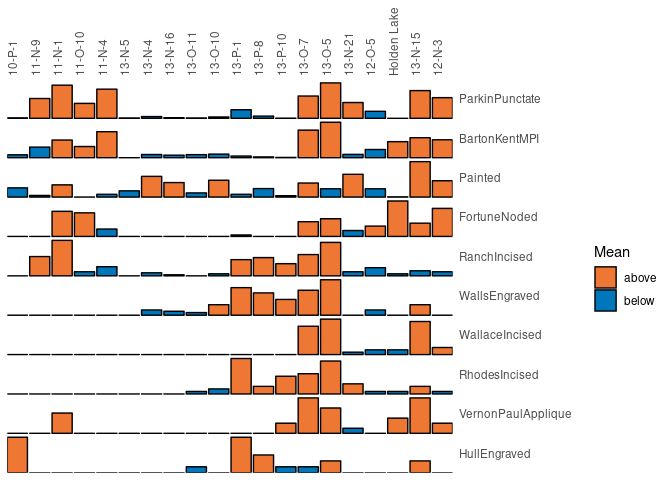
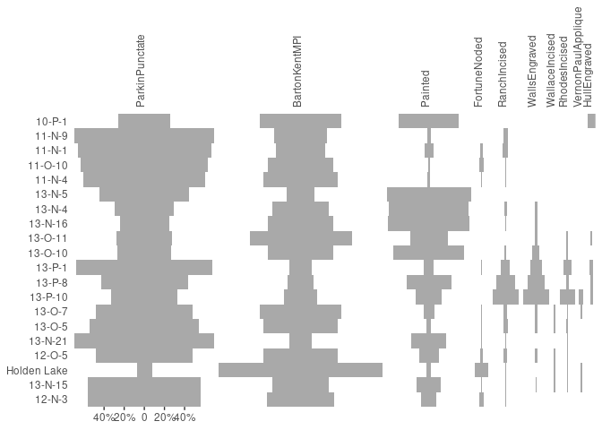
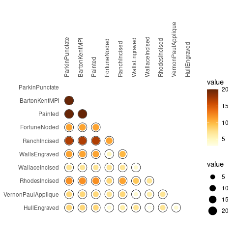
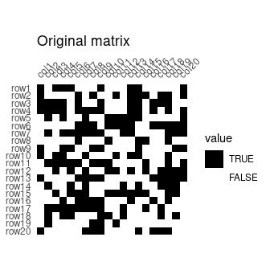
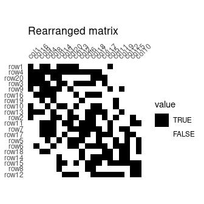
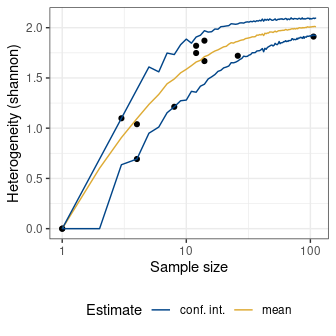
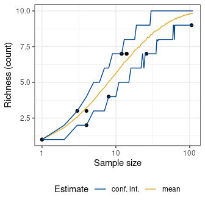
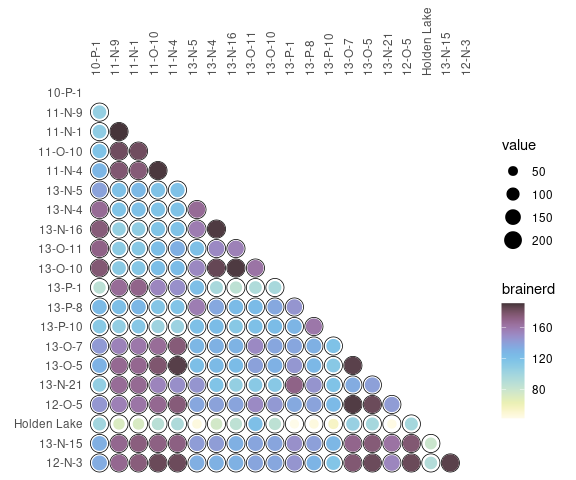

Overview
An easy way to examine archaeological count data. tabula provides a convenient and reproducible toolkit for relative dating by matrix seriation (reciprocal ranking, CA-based seriation). This package provides several tests and measures of diversity: heterogeneity and evenness (Brillouin, Shannon, Simpson, etc.), richness and rarefaction (Chao1, Chao2, ACE, ICE, etc.), turnover and similarity (Brainerd-Robinson, etc.). The package make it easy to visualize count data and statistical thresholds: rank vs. abundance plots, heatmaps, Ford (1962) and Bertin (1977) diagrams.
kairos is a companion package to tabula that provides functions for chronological modeling and dating of archaeological assemblages from count data.
To cite tabula in publications use:
Frerebeau, Nicolas (2019). tabula: An R Package for Analysis,
Seriation, and Visualization of Archaeological Count Data. Journal of
Open Source Software, 4(44), 1821. DOI 10.21105/joss.01821.
Une entrée BibTeX pour les utilisateurs LaTeX est
@Article{,
title = {{tabula}: An R Package for Analysis, Seriation, and Visualization of Archaeological Count Data},
author = {Nicolas Frerebeau},
year = {2019},
journal = {Journal of Open Source Software},
volume = {4},
number = {44},
page = {1821},
doi = {10.21105/joss.01821},
}Installation
You can install the released version of tabula from CRAN with:
install.packages("tabula")And the development version from GitHub with:
# install.packages("remotes")
remotes::install_github("tesselle/tabula")Usage
## Load packages
library(tabula)
library(folio) # Datasets
library(khroma) # Color scales
library(magrittr) # Pipes
library(ggplot2)tabula uses a set of S4 classes that represent different special types of matrix. Please refer to the documentation of the arkhe package where these classes are defined.
It assumes that you keep your data tidy: each variable (type/taxa) must be saved in its own column and each observation (sample/case) must be saved in its own row.
Visualization
Several types of graphs are available in tabula which uses ggplot2 for plotting informations. This makes it easy to customize diagrams (e.g. using themes and scales).
Bertin or Ford (battleship curve) diagrams can be plotted, with statistic threshold (including B. Desachy’s sériographe).
## Bertin matrix with variables scaled to 0-1 and the variable mean as threshold
scale_01 <- function(x) (x - min(x)) / (max(x) - min(x))
mississippi %>%
as_count() %>%
plot_bertin(threshold = mean, scale = scale_01) +
khroma::scale_fill_vibrant(name = "Mean")

Spot matrix1 allows direct examination of data:
## Plot co-occurrence of types
## (i.e. how many times (percent) each pairs of taxa occur together
## in at least one sample.)
mississippi %>%
as_occurrence() %>%
plot_spot() +
ggplot2::labs(size = "Co-occurrence", colour = "Co-occurrence") +
khroma::scale_colour_YlOrBr()
Seriation
## Build an incidence matrix with random data
set.seed(12345)
binary <- sample(0:1, 400, TRUE, c(0.6, 0.4))
incidence <- IncidenceMatrix(data = binary, nrow = 20)
## Get seriation order on rows and columns
## Correspondance analysis-based seriation
(indices <- seriate_rank(incidence, margin = c(1, 2)))
#> <PermutationOrder: reciprocal ranking>
#> Permutation order for matrix seriation:
#> - Row order: 1 4 20 3 9 16 19 10 13 2 11 7 17 5 6 18 14 15 8 12...
#> - Column order: 1 16 9 4 8 14 3 20 13 2 6 18 7 17 5 11 19 12 15 10...
## Permute matrix rows and columns
incidence2 <- permute(incidence, indices)
## Plot matrix
plot_heatmap(incidence) +
ggplot2::labs(title = "Original matrix") +
ggplot2::scale_fill_manual(values = c("TRUE" = "black", "FALSE" = "white"))
plot_heatmap(incidence2) +
ggplot2::labs(title = "Rearranged matrix") +
ggplot2::scale_fill_manual(values = c("TRUE" = "black", "FALSE" = "white"))

Diversity
Diversity can be measured according to several indices (referred to as indices of heterogeneity – see vignette("diversity")). Corresponding evenness (i.e. a measure of how evenly individuals are distributed across the sample) can also be computed, as well as richness and rarefaction.
mississippi %>%
as_count() %>%
index_heterogeneity(method = "shannon")
#> <HeterogeneityIndex: shannon>
#> size index
#> 10-P-1 153 1.2027955
#> 11-N-9 758 0.7646565
#> 11-N-1 1303 0.9293974
#> 11-O-10 638 0.8228576
#> 11-N-4 1266 0.7901428
#> 13-N-5 79 0.9998430
#> 13-N-4 241 1.2051989
#> 13-N-16 171 1.1776226
#> 13-O-11 128 1.1533432
#> 13-O-10 226 1.2884172
#> 13-P-1 360 1.1725355
#> 13-P-8 192 1.5296294
#> 13-P-10 91 1.7952443
#> 13-O-7 1233 1.1627477
#> 13-O-5 1709 1.0718463
#> 13-N-21 614 0.9205717
#> 12-O-5 424 1.1751002
#> Holden Lake 360 0.7307620
#> 13-N-15 1300 1.1270126
#> 12-N-3 983 1.0270291
## Data from Conkey 1980, Kintigh 1989, p. 28
chevelon <- as_count(chevelon)
sim_heterogeneity <- simulate_heterogeneity(chevelon, method = "shannon")
plot(sim_heterogeneity) +
ggplot2::theme_bw() +
ggplot2::theme(legend.position = "bottom")
sim_richness <- simulate_richness(chevelon, method = "none")
plot(sim_richness) +
ggplot2::theme_bw() +
ggplot2::theme(legend.position = "bottom")

Several methods can be used to ascertain the degree of turnover in taxa composition along a gradient on qualitative (presence/absence) data. It assumes that the order of the matrix rows (from 1 to n) follows the progression along the gradient/transect.
Diversity can also be measured by addressing similarity between pairs of sites:
## Calculate the Brainerd-Robinson index
## Plot the similarity matrix
mississippi %>%
as_count() %>%
similarity(method = "brainerd") %>%
plot_spot() +
khroma::scale_colour_iridescent(name = "brainerd")
Contributing
Please note that the tabula project is released with a Contributor Code of Conduct. By contributing to this project, you agree to abide by its terms.
License
- Full license
- GPL (>= 3)
Community
Citation
Developers
- Nicolas Frerebeau
Author, maintainer - More about authors...